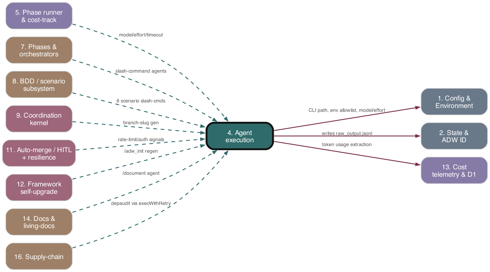

Subsystem 04 of 16
Agent execution
As-is reference. Ground truth: source code.

Purpose
The single seam through which every ADW phase talks to the model. It spawns the claude (Claude Code) CLI as a child process, drives it with a slash command + arguments, parses the CLI's streamed JSONL output (assistant text, tool calls, system events, the terminal result), enforces lifecycle policy (watchdog timeout, token-limit kill, auth/rate-limit/compaction kills, ENOENT/auth retries), and returns a typed AgentResult. A thin runCommandAgent wrapper layers model/effort routing and schema-validated output retries on top.
Responsibilities
- Build the CLI prompt string
"<command> '<arg>' '<arg>'…"(single-quoting each arg; optionalcontextPreambleprepended). - Spawn the resolved
claudebinary with a fixed flag set; run itdetached(new process group) with a filtered (allowlisted) env. - Stream-parse stdout JSONL incrementally with cross-chunk line buffering; surface progress via callback; mirror raw lines and a human log into the agent state dir.
- Detect, mid-stream, fatal conditions (auth error, rate limit / overload / server error, context compaction, output-token threshold) and
SIGTERMthe child early. - Enforce a per-phase watchdog;
killProcessGroupthe whole tree on timeout. - Map terminal exit code + parser state into
AgentResult; throwAgentTimeoutError/RateLimitError/AuthRequiredErrorfor orchestrator handling. - Retry policy: up to 3 total attempts on
ENOENT(re-resolve path); one retry on expired OAuth (afterclaude auth status --jsoncheck); never retry on rate limit. - Cost extraction delegated to
AnthropicTokenUsageExtractor(13. Cost telemetry & D1">subsystem 13), invoked here per-chunk and at close. runCommandAgent: select model/effort viamodelRouting, run, then optionally validate extracted output against a JSON Schema with a corrective-Haiku retry loop.- A standalone schema probe/conformance harness (
adws/jsonl/) captures and CI-checks the CLI's JSONL envelope shape.
Key Files
| Path | Role |
|---|---|
| --- | --- |
adws/agents/claudeAgent.ts |
runClaudeAgentWithCommand — prompt build, spawn, flags, watchdog, ENOENT/auth retries, error classification. |
| --- | --- |
adws/agents/agentProcessHandler.ts |
handleAgentProcess — attaches stdout/stderr/close/error handlers, mid-stream kill triggers, builds AgentResult + cost fields. |
| --- | --- |
adws/agents/commandAgent.ts |
runCommandAgent<T> — generic wrapper; model/effort routing; schema-validated output retry loop (max 10, early-exit at 3 identical errors). |
| --- | --- |
adws/core/claudeStreamParser.ts |
parseJsonlOutput + content/message types; JSONL line parsing, text/tool extraction, structured event detection. |
| --- | --- |
adws/agents/jsonlParser.ts |
Backward-compat re-export barrel pointing at claudeStreamParser. |
| --- | --- |
adws/agents/index.ts |
Barrel exporting all agent runners (thin per-command wrappers built on runCommandAgent). |
| --- | --- |
adws/core/environment.ts |
CLAUDE_CODE_PATH, resolveClaudeCodePath, clearClaudeCodePathCache, getSafeSubprocessEnv, SAFE_ENV_VARS. |
| --- | --- |
adws/core/modelRouting.ts |
Per-command model & effort maps (+ /fast//cheap variants); getModelForCommand, getEffortForCommand. |
| --- | --- |
adws/core/agentTimeouts.ts |
getAgentTimeoutForPhase — per-phase watchdog timeout. |
| --- | --- |
adws/types/agentTypes.ts |
AgentResult, ClaudeCodeResultMessage, RateLimitError/AuthRequiredError/AgentTimeoutError. |
| --- | --- |
adws/jsonl/schema.json |
Probed JSONL envelope schema (assistant/result/system message-type field structure). |
| --- | --- |
adws/jsonl/schemaProbe.ts |
probeClaudeJsonlSchema — spawns claude --print --output-format stream-json "say hello", extracts schema. |
| --- | --- |
adws/jsonl/conformanceCheck.ts |
CI checker — validates fixtures vs schema + through parseJsonlOutput and the extractor. |
| --- | --- |
adws/jsonl/{types,index}.ts, fixtureUpdater.ts, fixtures/ |
Schema types, fixture corpus, auto-updater. |
Behavior & Flows
- Prompt build (
runClaudeAgentWithCommand): args single-quoted ('…'with'escaped as'\''); prompt =[preamble\n\n]command quotedArgs. Prompt saved to<statePath>/prompts/<command>.txt. - Spawn:
spawn(resolveClaudeCodePath(), cliArgs, { cwd, env: getSafeSubprocessEnv(), detached:true, stdio:['ignore','pipe','pipe'] }). Ifcwdis a worktree (.worktrees/), injectsADW_WORKTREE_PATHandADW_MAIN_REPO_PATHinto the env. - Watchdog:
setTimeout(getAgentTimeoutForPhase(phaseName)); on fire setswatchdogFired, callskillProcessGroup(pid, 5000). AfterhandleAgentProcessresolves, ifwatchdogFired→ throwAgentTimeoutError. - Stream handling (
handleAgentProcess): each stdout chunk is appended to the JSONL output file, fed toextractor.onChunk, and toparseJsonlOutput. After each chunk, checks parser state flags and the running token estimate; on any trip itclaude.kill('SIGTERM')and remembers the reason. stderr is logged + written prefixed[STDERR]. - Mid-stream kill triggers:
authErrorDetected→ kill (→authExpired);rateLimitRejected || serverErrorDetected || overloadedErrorDetected→ kill (→rateLimited);compactionDetected→ kill (→compactionDetected:true, success); primary-model output tokens ≥MAX_THINKING_TOKENS * TOKEN_LIMIT_THRESHOLD→ kill (→tokenLimitExceeded:true, success with partial output). - Close handling: builds cost fields from extractor (
getReportedCostUsdif finalized, else estimated;costSource=extractor_finalized|extractor_estimated). Resolution precedence: rateLimited → tokenLimit → compaction → (code===0 && lastResult) success → (code===0, no result; warns if 0 turns "slash command may not be available") → failure (withauthExpired). - Post-result retries (
runClaudeAgentWithCommand): ifoutputcontainsENOENT→ up to 2 more attempts (3 total), eachclearClaudeCodePathCache(), exponential backoff500*2^n, re-spawn with re-resolved path (own watchdog). IfrateLimited→ throwRateLimitError(no retry). IfauthExpired→ runclaude auth status --json(fullprocess.env, 15s); ifloggedInre-spawn once, else throwAuthRequiredError. runCommandAgent: builds outputFile underlogsDir,model = getModelForCommand(command, issueBody),effort = getEffortForCommand(...), callsrunClaudeAgentWithCommand. IfextractOutputprovided, runsrunRetryLoop: re-extract; on failure spawn a fresh haiku session with a corrective prompt embedding the schema + validation error; up toMAX_RETRIES=10, early-exit afterMAX_CONSECUTIVE_IDENTICAL_ERRORS=3, else throwOutputValidationError.- Schema probe / conformance:
schemaProbespawnsclaude --print --output-format stream-json "say hello", takes first occurrence of eachtypeas the schema.conformanceCheckvalidates each fixture's required fields + that it feeds cleanly throughparseJsonlOutput(asserts assistant→turnCount++, result→lastResult set) and the extractor (assistant→usage present, result→finalized). Unknowntype= informational, not a failure.
Data Structures
cliArgs:['--print','--verbose','--dangerously-skip-permissions','--output-format','stream-json','--model',<model>, (effort? '--effort',<effort>), <prompt>].JsonlParserState:lastResult,fullOutput,turnCount,toolCount,primaryModel?,lineBuffer, and boolean flagsrateLimitRejected,authErrorDetected,serverErrorDetected,overloadedErrorDetected,compactionDetected.- Content blocks:
TextContentBlock{type:'text',text},ToolUseContentBlock{type:'tool_use',id,name,input},ToolResultContentBlock{type:'tool_result',tool_use_id,content}. JsonlMessage: union ofassistant(message.content[]),result, or{type,…}fallback.AgentResult:success,output,sessionId?,totalCostUsd?,modelUsage?,statePath?,tokenLimitExceeded?,compactionDetected?,tokenUsage?,partialOutput?,estimatedUsage?,actualUsage?,costSource?,authExpired?,rateLimited?.ClaudeCodeResultMessage:type,subtype,isError,durationMs,durationApiMs,numTurns,result,sessionId.CommandAgentConfig<T>/CommandAgentOptions/CommandAgentResult<T>(= AgentResult & {parsed:T}).EnvelopeSchema/SchemaField/ConformanceResult(jsonl harness).
Public Interface
runClaudeAgentWithCommand(command, args, agentName, outputFile, model='sonnet', effort?, onProgress?, statePath?, cwd?, contextPreamble?, phaseName?) → Promise<AgentResult>runCommandAgent<T>(config, options) → Promise<CommandAgentResult<T>>;OutputValidationError.parseJsonlOutput,extractTextFromAssistantMessage,extractToolUseFromMessage+ all JSONL/progress types.handleAgentProcess(claude, agentName, outputFile, onProgress, statePath, model) → Promise<AgentResult>.- Errors:
RateLimitError,AuthRequiredError,AgentTimeoutError. - jsonl harness:
probeClaudeJsonlSchema,checkConformance,formatConformanceReport.
Dependencies
- Upstream (depends on):
-
- Config & Environment —
CLAUDE_CODE_PATH/resolveClaudeCodePath/getSafeSubprocessEnv,MAX_THINKING_TOKENS,TOKEN_LIMIT_THRESHOLD, model/effort routing,getAgentTimeoutForPhase.
- Config & Environment —
-
- State & ADW ID —
AgentStateManager(prompt save,appendLog,writeRawOutputtooutput.jsonl).
- State & ADW ID —
-
- Cost telemetry & D1 —
AnthropicTokenUsageExtractor,computeCost,getAnthropicPricing,computeTotalTokens.
- Cost telemetry & D1 —
processKill.killProcessGroup;vcs/worktreeOperations.getMainRepoPath.- Downstream (depended on by):
-
- Phases & orchestrators — all per-command agent wrappers (planAgent, buildAgent, testAgent, gitAgent, prAgent, reviewAgent, documentAgent, etc.) call these runners.
-
- Phase runner & cost-tracking composition — consumes
AgentResultand the thrown error types.
- Phase runner & cost-tracking composition — consumes
Interactions
| Other subsystem | Direction | What is exchanged |
|---|---|---|
| --- | --- | --- |
| 7. Phases & orchestrators | called-by | runs slash-command agents; returns AgentResult / throws timeout, rate-limit, auth errors |
| --- | --- | --- |
| 5. Phase runner & cost-tracking | called-by | RateLimitError/AgentTimeoutError/AuthRequiredError drive pause/timeout/auth-gate; costSource/modelUsage feed cost composition |
| --- | --- | --- |
| 1. Config & Environment | depends-on | CLI path resolution, safe env allowlist, model/effort maps, per-phase timeouts, token thresholds |
| --- | --- | --- |
| 2. State & ADW ID | depends-on | writes prompts, raw output.jsonl, human appendLog entries to agent state dir |
| --- | --- | --- |
| 13. Cost telemetry & D1 | depends-on | per-chunk + finalized token/cost extraction via AnthropicTokenUsageExtractor |
| --- | --- | --- |
| 11. Auto-merge / HITL + resilience | indirect | mid-stream rate-limit/auth kills surface as errors that orchestrators turn into pause/auth-gate |
PRD Divergences
None observed (no subsystem-specific PRD; behavior documented directly from source).